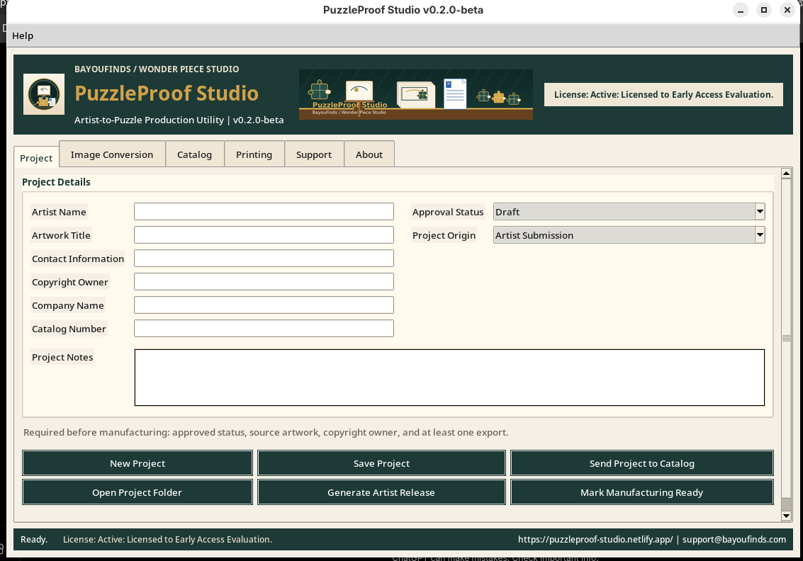

Puzzle Print presets
Generate the production-size puzzle print output from the customer image.
Early Access Program
Current Build: v0.2.0 Beta Beta
Production software for custom puzzle makers
Turn one customer image into print-ready puzzle production assets in minutes.
PuzzleProof Studio helps custom puzzle makers generate Puzzle Print, Box Insert, and Box Sticker / Label outputs from a single image while reducing manual resizing, cropping, and setup work.
Real production workflow software currently undergoing customer validation.

Built from real production work
Built using real-world production workflows and refined through active testing with custom puzzle makers.
What it does
Designed for small puzzle businesses, custom gift makers, and production shops looking to simplify image preparation before printing.
Generate the production-size puzzle print output from the customer image.
Create the customer insert asset without manual layout setup.
Create the packaging sticker or label output for the order.
Export Word-compatible files for users comfortable printing from DOCX.
Save direct image outputs for print-ready production workflows.
Find saved files quickly after export.
See suggested printer guidance for each production output.
Tester update
The DOCX export workflow has been improved so testers can confirm exactly where each file was saved and open it faster after export.
Import Artwork → Prepare Puzzle Proof → Export DOCX → Open File → Print & Produce
Product screenshots
Screenshots from the v0.2.0 Beta Beta workflow, showing the production UI as tested.
Built from real workflow
Wonder Piece Studio beta testing with Sean Watkins showed the real problem: Microsoft Word was being used as a manual workaround, not because Word was required.
The customer pain point was repeated image resizing, cropping, and positioning for each order. PuzzleProof Studio focuses on automating those production presets and reducing setup time.
Designed to reduce repetitive image preparation before production printing.
Validation Partner

Founder, Wonder Piece Studio
Validation Partner for PuzzleProof Studio
Sean works directly with BayouFinds to test PuzzleProof Studio in real-world puzzle production workflows.
His feedback has helped improve:
Current Build:
v0.2.0 Beta Beta
Initial workflow design
Sean Validation Build Released
Workflow and production testing
v0.2.0 Beta Beta release and intake rollout
Production Workflow Engine
PuzzleProof Studio is the first implementation of our Production Workflow Engine.
While optimized for puzzle manufacturing, the same workflow framework can be adapted for many creative, production, and custom manufacturing businesses.
Every business has unique workflows. BayouFinds can customize the underlying workflow engine to match your approval process, documentation requirements, production steps, and reporting needs.
Development Roadmap & Changelog
PuzzleProof Studio is in early access validation. This roadmap tracks the current build, recent changes, and the next planned maintenance release.
Current Windows validation build for Sean Watkins / Wonder Piece Studio production workflow review.
CHANGE LOG
This update improves export visibility, tester feedback, and the in-app production artwork while preserving the existing DOCX workflow.
Workflow
A simple production path for testers reviewing the current DOCX export workflow.
Download / Early Access
Current Build: v0.2.0 Beta Beta
This early-access build is ready for Windows customer validation. It is intended for real production workflow testing with small puzzle makers and production partners.
FAQ
No. The Windows customer package includes the app and runtime needed to launch it.
Yes. The current early-access package is prepared for Windows customer validation.
Yes. DOCX export is supported for users comfortable printing from Word.
It is in early access testing for production workflows. Validate outputs with your printer, materials, and process before relying on it for customer orders.
BayouFinds Workflow Solutions
PuzzleProof Studio is one example of the workflow software built by BayouFinds.
If your business manages approvals, production tracking, customer requests, inventory, scheduling, reporting, or operational processes, BayouFinds Workflow Solutions can help design software around the way your team actually works.
Built in Louisiana.
Designed for real-world operations.
Wonder Piece Studio
Wonder Piece Studio accepts custom puzzle requests through the PuzzleProof Studio intake workflow.
Submit your artwork, quantity, deadline, shipping details, and production notes so Sean Watkins can review the request.
Sean Watkins
Wonder Piece Studio
Contact
workflow@bayoufinds.com
PuzzleProof Studio feedback, workflow questions, feature requests, and tester submissions.
support@bayoufinds.com
Technical support, installation help, licensing questions, and general product assistance.